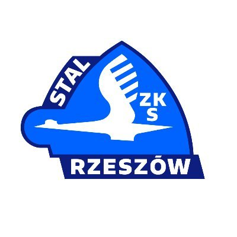

Texom Stal Rzeszów
Texom Stal Rzeszów to jeden z najbardziej rozpoznawalnych klubów żużlowych w Polsce, z bogatą historią i tradycjami sięgającymi początków powojennego żużla. Klub ma za sobą wiele sukcesów, w tym tytuły mistrzów Polski oraz liczne medale ligowe.
Przez lata barwy Stali Rzeszów reprezentowali wybitni zawodnicy, tacy jak Florian Kapała, Jan Mucha, a także wielu innych, którzy na stałe wpisali się w historię polskiego żużla. Choć klub przechodził różne koleje losu, zawsze mógł liczyć na wsparcie wiernych kibiców, którzy wypełniają trybuny stadionu przy ulicy Hetmańskiej.
Historia Klubu
Historia rzeszowskiego żużla jest długa i pełna zwrotów akcji. Początki sięgają lat 40. XX wieku. Klub na przestrzeni dekad przeżywał okresy świetności, zdobywając Mistrzostwo Polski w 1960 roku, a także lata trudniejsze. Mimo wszystko, rzeszowski żużel zawsze wracał na właściwe tory, napędzany pasją kibiców i zaangażowaniem lokalnej społeczności.
W ostatnich latach klub odbudowuje swoją pozycję, dążąc do powrotu do najwyższych ligowych rozgrywek i walki o medale. Ambitne plany, wsparcie sponsorów i młodzież szkolona w Rzeszowie dają nadzieję na kolejne sukcesy.
Zawodnicy Texom Stal Rzeszów (Obecny Skład i Legendy)
Aktualny skład Texom Stali Rzeszów to mieszanka doświadczenia i młodości. Celem jest zbudowanie drużyny zdolnej do walki o awans i stabilizację w 1. Lidze Żużlowej.
Legendy Klubu (przykłady, do rozbudowania)
- **Florian Kapała:** Ikona rzeszowskiego żużla, wielokrotny medalista.
- **Jan Mucha:** Kolejna legenda klubu, z którym związany był przez całą karierę.
- **Grzegorz Kuźniar:** Wybitny zawodnik i późniejszy trener.
Sprzęt i Technika w Rzeszowie
Współczesny żużel to nie tylko umiejętności zawodników, ale także zaawansowany sprzęt. Motocykle używane przez zawodników Stali Rzeszów są standardowymi maszynami żużlowymi, jednak każdy zawodnik dostosowuje je indywidualnie do swoich preferencji i warunków torowych. Kluczowe elementy to silniki o dużej mocy (Jawa, GM), specjalne ramy oraz opony zapewniające przyczepność w trudnych warunkach.

W parku maszyn Texom Stali Rzeszów pracują doświadczeni mechanicy, którzy dbają o idealne przygotowanie każdego motocykla przed wyścigiem. Regularne serwisowanie, precyzyjne ustawienia i innowacyjne rozwiązania techniczne są kluczowe dla osiągania optymalnych wyników na torze.
Stadion "Stal" w Rzeszowie (im. Edwarda Jancarza)
Domowym obiektem Texom Stali Rzeszów jest stadion miejski przy ulicy Hetmańskiej, którego patronem jest legendarny żużlowiec Edward Jancarz. Obiekt ma długą historię i jest świadkiem wielu emocjonujących meczów i turniejów.
- Wymiary toru: Długość toru żużlowego to 395 m.
- Nawierzchnia: Rzeszowski tor znany jest z tego, że często bywa wymagający i sprzyja walce.
- Pojemność: 12 700 miejsc siedzących.
- Modernizacje: W 2025 planowana jest modernizacja budynku spikerka.

Atmosfera na stadionie w Rzeszowie jest zawsze gorąca, a doping kibiców Stali Rzeszów słynie w całej Polsce. Mecze w Rzeszowie to prawdziwe święto żużla.
Zachęcamy do odwiedzania stadionu i wspierania Texom Stali Rzeszów w dążeniu do kolejnych sukcesów!
Galeria Zdjęć Stali Rzeszów